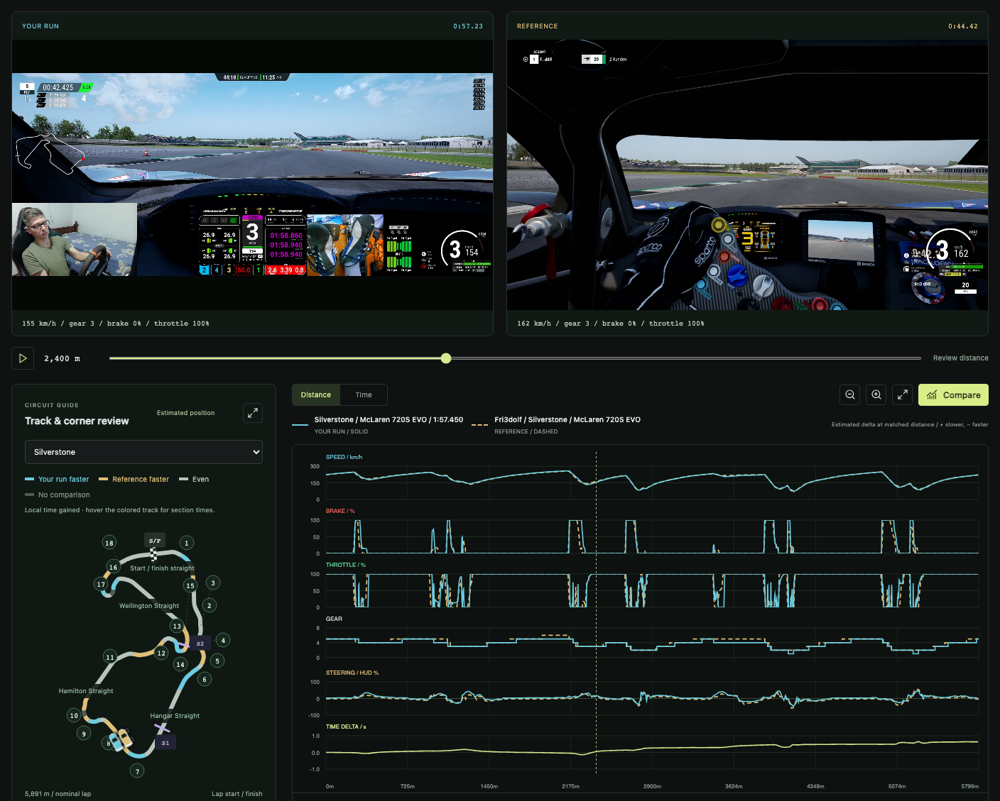

Assetto Corsa Competizione · Made by Rice Racing
Free ACC console telemetryfrom recorded video.
Understand your inputs. Learn from a great lap. Turn your PlayStation, Xbox, or PC gameplay recordings into brake, throttle, speed, gear, and steering traces you can compare on your computer.
Windows · macOS · Linux No account, subscription, or purchase required.

See what your inputs reveal.
Review when you brake, how you release the pedal, and where you return to the throttle. Inspect readable speed, gear, and steering alongside the video.
Put a reference lap beside yours.
Import another recording or find a creator’s lap in the reference library. Review both videos and traces with a shared cursor.
Keep your analysis on your computer.
Video processing happens locally. Revisit saved recordings and export CSV data when you want to study your inputs further.
From a recording to a comparison
Bring your lap. See the difference.
Install the desktop app, then start with a gameplay video that clearly shows the ACC input HUD. You can review one recording before adding a reference.
Import your recording.
Open Video options under Your run and choose Import recording. Transfer console footage to your computer first, or use a local PC recording.
Add a lap to learn from.
Under Reference → Video options, choose Find reference lap and select your circuit and car. You can also import your own reference recording.
Choose the laps and review your inputs.
Set each video’s Start of lap and End of lap, then press Lock on the selected frames. Use the same circuit layout and physical start line, and compare braking, throttle, speed, and estimated time delta.
Before your first lap review
A few useful details.
Does this run on a console?
The app runs on a Windows, Mac, or Linux computer. It analyzes recorded Assetto Corsa Competizione gameplay from PlayStation, Xbox, or PC; you do not install it on the console.
Is it really free?
Yes. Every feature is free, with no account, subscription, or purchase required. Donations to Rice Racing are optional.
Is this live telemetry, or a replacement for a data logger?
It is recorded-video analysis. The app reads visible HUD pixels, so hidden inputs cannot be recovered. Distance, map position, and time delta are estimates; it does not measure an exact racing line or suspension data, and it does not export MoTeC .ld files. Read the measurement and comparison guide.
What kind of recording works best?
Use clear footage with the complete pedal bars, speed, gear, and lap clock visible. Compression, cuts, hidden HUDs, and missing frames can limit the result. Car, setup, weather, tyres, fuel, and game version can also affect a lap comparison.
Does it need an Internet connection?
Local video files can be analyzed offline. Importing a public reference video needs an Internet connection; the recording and analysis are then saved locally for reuse.
Start with the lap you already have
Your next review starts here.
Choose an installer for your computer. You do not need Python, Node.js, or the source-code ZIP.
Mac builds are not Apple-notarized; Windows builds are unsigned. See the supported systems and installation instructions before your first launch.